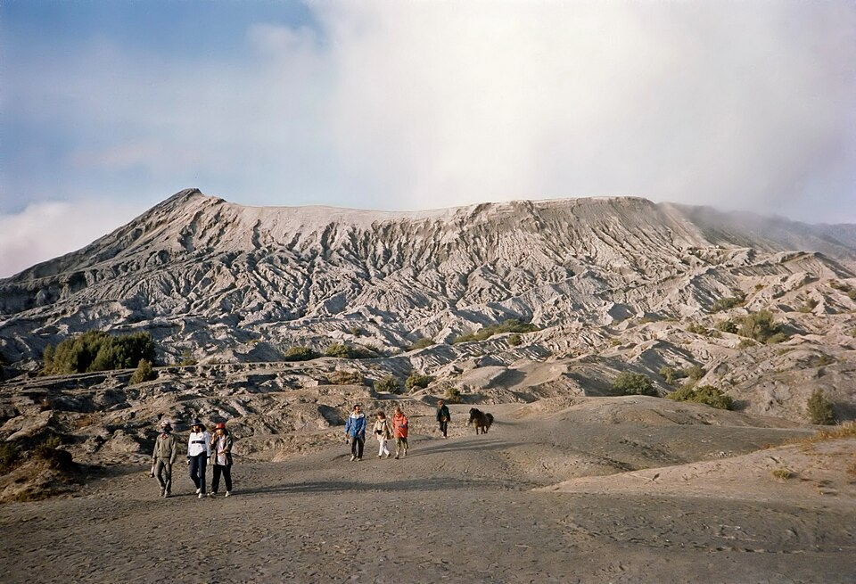
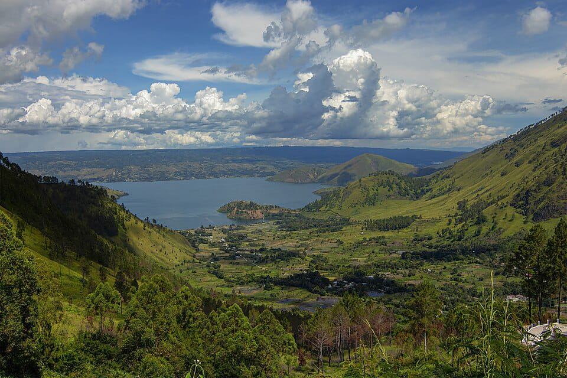
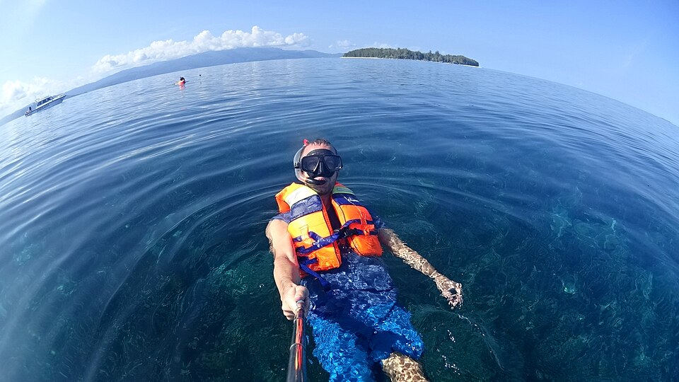

Pesona Wisata Alam Indonesia
Diterbitkan pada 11 Oktober 2026
Indonesia memiliki beragam keindahan alam, mulai dari pegunungan, pantai, danau, hingga hutan tropis. Setiap daerah mempunyai karakteristik dan daya tarik tersendiri yang menarik untuk dijelajahi.
Melalui halaman ini, kamu diajak untuk mengenal beberapa destinasi wisata alam yang terkenal, mulai dari keunikan tempatnya hingga berbagai aktivitas yang dapat dilakukan di sana. Oleh karena itu, penting bagi kita untuk memahami cara menjelajah yang baik dan bertanggung jawab agar keindahan tersebut tetap lestari.
Selain itu, kamu juga akan belajar cara menyiapkan perjalanan yang aman dan menyenangkan. Salah satu cara untuk menjelajah wisata yang bertanggung jawab adalah menjaga kebersihan, menghormati budaya setempat, dan tidak merusak alam.
Dengan menjelajahi alam secara bijak, kita tidak hanya mendapatkan pengalaman yang berkesan, tetapi juga turut menjaga kelestarian alam Indonesia untuk generasi mendatang.
Rekomendasi Destinasi Wisata
1. Gunung Bromo

Gunung Bromo, Jawa Timur. Foto: Bernard Gagnon, melalui Wikimedia Commons, lisensi CC BY-SA 3.0
Gunung Bromo terkenal dengan pemandangan matahari terbit, lautan pasir, dan kabut pegunungan yang indah. Destinasi ini cocok bagi wisatawan yang ingin menikmati suasana pegunungan yang sejuk dan menenangkan.
Lokasi: Jawa Timur
2. Danau Toba

Danau Toba, Sumatera Utara. Foto: Wikipedia, melalui Wikimedia Commons, lisensi CC BY-SA 4.0

Danau Toba merupakan danau vulkanik yang memiliki pemandangan perbukitan dan pulau di tengahnya. Kawasan ini juga dikenal dengan budaya masyarakat Batak.
Lokasi: Sumatera Utara
3. Raja Ampat

Raja Ampat, Papua Barat Daya. Foto: Shawn Kellar, melalui Wikimedia Commons, lisensi CC BY 2.0

Raja Ampat terkenal dengan pulau-pulau karst, pantai yang jernih, dan kekayaan kehidupan bawah laut. Keberadaan ekosistemnya perlu dijaga oleh semua pengunjung.
Lokasi: Papua Barat Daya
Perbandingan Destinasi
| Destinasi | Provinsi | Daya Tarik | Kegiatan |
|---|---|---|---|
| Gunung Bromo | Jawa Timur | Matahari terbit dan lautan pasir | Melihat matahari terbit dan berkuda |
| Danau Toba | Sumatera Utara | Danau dan perbukitan | Menikmati pemandangan dan mengunjungi budaya Batak |
| Raja Ampat | Papua Barat Daya | Pulau karst dan bawah laut | Snorkeling dan menjelajah pulau-pulau kecil |
Tips Menjelajahi Alam
Perhatikan beberapa hal berikut sebelum bepergian:
- Pelajari kondisi cuaca dan jalur perjalanan.
- Siapkan perlengkapan sesuai rencana.
- Gunakan pakaian dan alas kaki yang nyaman dan aman.
- Siapkan uang tunai secukupnya.
- Patuhi petunjuk keselamatan dari petugas setempat.
Perlengkapan yang Perlu Dibawa
- Botol minum
- Obat-obatan pribadi
- Perlengkapan kebersihan pribadi
- Pakaian sesuai kondisi cuaca
- Kantong untuk membawa kembali sampah
Tahukah Kamu?
Mengapa kita harus menjaga wisata alam?
Lingkungan yang terjaga membuat masyarakat sekitar, satwa, sumber air, dan kehidupan masyarakat lestari. Wisata yang bertanggung jawab juga membantu menjaga keindahan alam agar dapat dinikmati generasi mendatang.
Apa yang dimaksud dengan ekowisata?
Ekowisata merupakan kegiatan wisata yang memperhatikan kelestarian lingkungan, memberikan pengalaman edukasi, serta memberikan manfaat bagi masyarakat lokal.
Kirim Pesan kepada Kami
Bagikan destinasi wisata alam yang ingin kamu kunjungi: